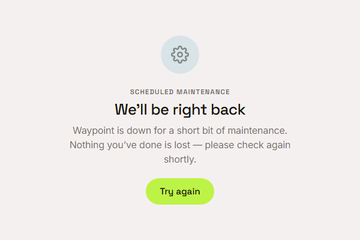

Waypoint · Video 088
Planned maintenance
We will be right back
A planned pause
Every request is answered with service unavailable
The answer hints when to try again
It is a planned pause, not a failure
We will be right back

Nothing you have done is lost
Try again
One button asks the server again
Things to remember
The server answers with service unavailable
The page says we will be right back
It promises that nothing is lost
Try again asks the server whether it is ready